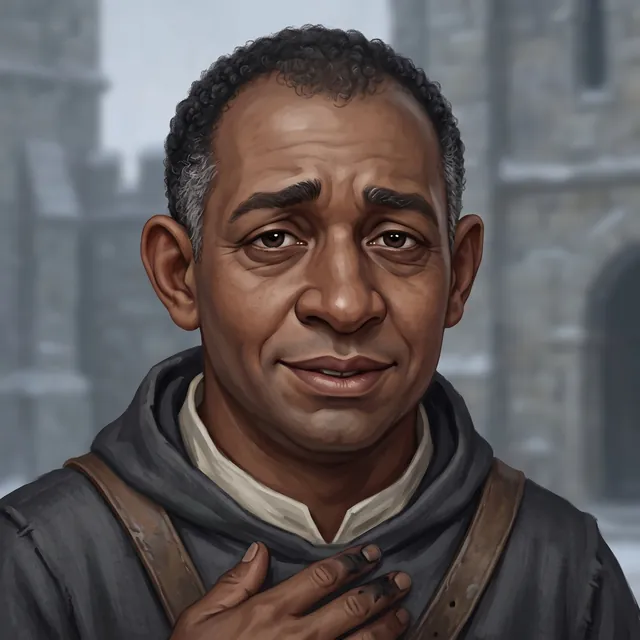

Brother Anselm
Almoner of Saint Ysolde's
Only what the story has shown so far.
Appearance
A lay brother in his forties with deep brown skin, close-cropped tight black curls gone grey at the temples, and a broad, soft face that looks tired even when it smiles: warm dark eyes with the creases of too little sleep under them, the brows drawn up at the middle in a worried, kindly line, a small uncertain smile. He wears the House's grey wool hood and robe over a cream linen collar, with the worn leather strap of the letter-satchel across his chest and the stores key on a cord at his belt, and he has a way of pressing a hand flat to his chest when he speaks, the first two fingers of it dark with ink. He apologises before he asks and trails off in the middle of a sentence.
Now
Last seen Chapter 4 · Scene 6 — Sitting Down · Saint Ysolde's
In the hall with the letter inside his shirt, waiting on the carter.
Story so far
Relationships
- Mother Ionethe Prior he keeps the stores and the letters for
He takes the House's letters down to the carter each week and holds the stores key.
- Ser Darrow of Edgemoorthe Captain he was brought to
Hollis brought him to the Captain's cot, shaking.
The Reckoning
⟦ unread ⟧
Known facts
What the page has shown (29)
- The stores key opens the old stair door where the wine was laid, below the kitchen end; the stair comes out in the undercroft hall behind a pillar at the kitchen end; he never used the flour door.Chapter 4 · Scene 1 — The Almoner
- A clerk in grey with a desk at the winch-house, older than the grey cloaks and not one of them, gave him two wrapped things before the snow and had his sister's letter, written in the clerk's hand and signed with her private mark.Chapter 4 · Scene 1 — The Almoner
- The clerk called the things a mercy for the wounded: the fever comes off a man through the floor if there is a stone to take it, as at the Spire; one under the hall, then the other under the far cots.Chapter 4 · Scene 1 — The Almoner
- He set the first by the wine stair with a trowel and a lamp and was sick on the stair; he never set the second.Chapter 4 · Scene 1 — The Almoner
- His sister Mirren went to the Spire at Calden to ask what had become of the brothers' letters from Coldmere, asked the wrong man in front of the wrong people, and is kept at Calden, comfortably, the clerk said twice.Chapter 4 · Scene 1 — The Almoner
- He never saw the clerk kneel; the grey cloaks all kneel at the dawn bell, and the clerk only wrote.Chapter 4 · Scene 1 — The Almoner
- He says the letters from Calden come up with the carter every seventh day, and there is always another letter.Chapter 4 · Scene 1 — The Almoner
- His sister's letter says she is well kept, that he has a thing to finish, and that when it is finished he may fetch her home from Calden; it carries her private mark.Chapter 4 · Scene 2 — Her Hand
- He says his sister would never say she was well kept: the words are the clerk's, written for her to sign under.Chapter 4 · Scene 2 — Her Hand
- A lock of his sister's dark hair, tied with thread, came in the letter.Chapter 4 · Scene 2 — Her Hand
- He did not weep; his face shut.Chapter 4 · Scene 2 — Her Hand
- He bound the Captain's bitten thumb himself, with steady hands and a flat storesman's knot.Chapter 4 · Between — Her Mark
- He says his sister's mark is an M with a loop in the valley, like a hook, which she made at five learning her letters on the hearthstone and said was so it would hold.Chapter 4 · Between — Her Mark
- He says she has put the mark on everything since: her clothes-chest, the lintel of their mother's house the day they buried her, and under her name on every letter to him.Chapter 4 · Between — Her Mark
- He says their father was cried at the bell for the mill's debt when she was twelve, having put his hand to the paper for a miller who was gone, and that she went up the steps and answered at the bell.Chapter 4 · Between — Her Mark
- He says the herald cried her answer the next day, and that he, fourteen, apologised to the herald.Chapter 4 · Between — Her Mark
- He says the two of them are this: he says sorry first and asks second; she asks and has never said sorry in her life.Chapter 4 · Between — Her Mark
- He thanked the Captain for something he does not know yet.Chapter 4 · Between — Her Mark
- He offered to go down to the Confessor in the morning for the two names, the Captain's among them, and was refused.Chapter 4 · Scene 4 — The Price
- He said he would write whatever the Captain gave him, in his hand, the way he would write it.Chapter 4 · Between — Three Answers
- He said that if the next letter up had no hook in the M he would sooner know what he did than not, and that his sister would say so.Chapter 4 · Between — Three Answers
- He said his sister would say ask first and be sorry after, and that he has been sorry a month and would like to ask.Chapter 4 · Between — Three Answers
- He asked what happens if the letter is caught, and was told his sister pays and that he could refuse.Chapter 4 · Between — The Loop
- He said his sister would rather be asked after than traded for, and would be angry at him for the stone first, and rightly.Chapter 4 · Between — The Loop
- He wrote the letter to his sister in the shape his letters take, late and sorry, the snow and the bells and whether he is eating, with the thing in the middle: the thing they told her he had to finish is finished, two nights ago, the way he was shown, and the hall quieter since; tell me when I'm to come.Chapter 4 · Between — The Loop
- He asked where they have her, the town or the Spire, so he can send their mother's shawl, and asked her what their mother called the brindle cat, a thing only she could answer.Chapter 4 · Between — The Loop
- He added one line of his own under his name, The loop still holds, so that the clerk would read nothing in it and his sister would know it was him writing and not what they had him write.Chapter 4 · Between — The Loop
- He folded the letter unsealed, since the carter sees the House's letters sealed at the winch-house now, and put it inside his shirt against the lock of hair.Chapter 4 · Between — The Loop
- He vowed that when it is done, caught or not, he will go down to the bell at Coldmere where his father was cried and ask aloud on its steps what they did with his sister, the way she would.Chapter 4 · Between — The Loop